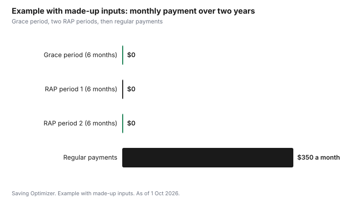

Education · Canada
Student Loan Repayment in Canada: Grace Period, Interest and the Repayment Assistance Plan
In Canada, you start repaying student loans six months after you leave full-time studies, and the federal Canada Student Loan portion charges no interest, as of 1 October 2026. The provincial portion can be different: Ontario and Saskatchewan are the only provinces still charging interest on their share, and Ontario's rate is prime plus 1%, which starts building during the grace period, according to CBC News on 25 August 2026. If your income is low after graduating, the Repayment Assistance Plan (RAP) can lower your monthly payment or reduce it to $0, six months at a time. Interest you pay on government student loans can be claimed for a non-refundable tax credit.
Key takeaways
- Grace period: six months after you finish or leave full-time studies; no payments are due.
- Federal Canada Student Loans charge no interest.
- Ontario's provincial portion charges prime plus 1%, including during the grace period; Saskatchewan also charges provincial interest.
- RAP sets payments by family income and size. A single borrower with gross income under $3,866 a month may not need to pay for 6 months, per canada.ca as of 1 Oct 2026. Reapply every six months.
- Interest on government student loans can go on line 31900 for a credit, carried forward up to five years.
- Example with made-up inputs: a graduate uses RAP for a year, then switches to regular payments.
How Canada Student Loans are structured
Most students in provinces that run integrated programs, such as Ontario, receive one loan from the National Student Loans Service Centre (NSLSC) with two parts: a federal Canada Student Loan and a provincial loan. You make one combined payment, but the parts have different rules. Federal interest on Canada Student Loans was permanently eliminated in 2023. Provinces set their own rules for their portion, and most no longer charge interest.
| Loan portion | Interest | Source |
|---|---|---|
| Canada Student Loan (federal) | None | Government of Canada |
| Ontario Student Loan (OSAP) | Prime plus 1%, including during the grace period | CBC News, 25 Aug 2026; Government of Ontario |
| Saskatchewan Student Loan | Charges provincial interest | CBC News, 25 Aug 2026 |
| Other provinces | No interest on the provincial portion | CBC News, 25 Aug 2026 |
Bank student lines of credit are a different product. They charge interest from the day you borrow, have their own repayment terms, and their interest does not qualify for the student loan interest tax credit.
The six-month grace period
The grace period starts the month after you stop being a full-time student, whether you graduated, dropped to part time or left school. During those six months no payments are required. In Ontario, interest on the provincial portion builds during the grace period; you can pay it as it accrues or let it be added to your balance. Before the grace period ends, the NSLSC sends a repayment schedule showing your monthly payment and repayment term. Log in to your NSLSC account to confirm your contact information, banking details and the date your first payment is due.
- Use the grace period to build a small cushion and set up the payment from the account your pay goes into.
- If you are going back to school full time, confirm your enrolment so repayment stays paused.
- If you expect low income, apply for RAP before the first payment rather than missing it.
- In Ontario, consider paying the provincial interest during the grace period if you can, so it does not grow your balance.
The Repayment Assistance Plan
RAP reduces your monthly payment to an amount based on your family income and family size, and can make it $0. You apply through your NSLSC account, and approval lasts six months; you must reapply for each new period. To qualify, your loans must be in repayment, meaning at least 6 months have passed since you left school, and your payments must be up to date. While you are on RAP, the government pays any interest on the federal part of your loan that your reduced payment does not cover, and it starts paying down principal and remaining interest after 60 months of RAP or 10 years after you finish school. As of 1 Oct 2026, canada.ca says that if your monthly gross family income is below these thresholds, you may not need to make payments for 6 months; above them, you may still qualify for a reduced payment. Thresholds may be different for the provincial part of your loan.
| Family size | Monthly income threshold |
|---|---|
| 1 | $3,866 |
| 2 | $4,535 |
| 3 | $5,556 |
| 4 | $6,412 |
| 5 | $7,170 |
| 6 | $7,854 |
| 7 or more | $8,483 |
| Feature | Detail |
|---|---|
| Who applies | Borrowers whose loans are in repayment and whose payments are up to date |
| What it is based on | Gross family income and family size |
| Payment | Reduced, possibly to $0 |
| Length | Six months at a time; reapply each period |
| Interest | Government pays federal-part interest your payment does not cover |
| Principal | Government starts paying it down after 60 months of RAP or 10 years after school |
Canada.ca notes that income thresholds may be different for the provincial part of your loan and that provincial restrictions may apply, so check with your province's student aid office about your provincial portion. Borrowers with disabilities have a separate plan, the Repayment Assistance Plan for Borrowers with Disabilities (RAP-D); on RAP-D, the government pays down both principal and any interest your reduced payments do not cover. Ask the NSLSC if it applies to you.

Choosing your repayment approach
With interest-free federal loans, there is less pressure to pay off the federal portion early. If you also have credit card debt or a bank line of credit, paying those first usually saves more. In Ontario, the provincial portion charges interest, so extra payments are often best directed there. You can make lump-sum payments at any time without penalty and ask the NSLSC to apply them to a particular portion. You can also ask to change your monthly payment and repayment term within the limits the NSLSC allows.
- High-interest debt first: credit cards and lines of credit usually cost more than student loans. See snowball versus avalanche.
- Then the interest-bearing provincial portion (Ontario or Saskatchewan).
- Then the interest-free federal portion, on schedule.
- Keep an emergency fund so a job loss does not cause missed payments.
The student loan interest tax credit
Interest you paid during the year on loans received under the Canada Student Loans Act, the Canada Student Financial Assistance Act, the Apprentice Loans Act or similar provincial programs can be claimed on line 31900. The credit is worth the interest multiplied by the lowest federal tax rate (14% for 2026), plus any provincial credit. Only the student can claim it, and if you do not need it this year you can carry it forward for up to five years. Since federal loans charge no interest, the credit now mostly matters for Ontario and Saskatchewan borrowers. Your NSLSC account shows the interest paid for the year.
What happens if you miss payments
As of 1 Oct 2026, canada.ca says that missing payments will affect your credit, and that when you miss 9 months of payments, the federal part of your loan goes to the Canada Revenue Agency for collections. Once in collections, you do not have access to student aid until you bring the loan back into good standing, which you arrange with the CRA: either pay any outstanding interest and make the equivalent of 4 monthly payments, or add unpaid interest to the balance (allowed only once) and make the equivalent of 4 monthly payments. RAP also requires your payments to be up to date. If money is tight, applying for RAP is almost always better than missing payments. The credit score guide explains how to check your report.
Example with made-up inputs: the first two years after graduating
These numbers are an example with made-up inputs. They are not real balances, interest rates or RAP results. Maya graduates in April with $24,000 of federal loans and $8,000 of Ontario loans.
| Period | Income | Payment | Notes |
|---|---|---|---|
| May to October (grace period) | Part-time work | $0 | Pays Ontario interest monthly to keep balance at $8,000 |
| November to April | Low, contract job | $0 under RAP | Applied before first payment |
| May to October | Low, contract job | $0 under RAP | Reapplied for second period |
| From November | Full-time job | $350 a month | Adds $100 a month to the Ontario portion |
Maya never misses a payment and never lets interest build. Once she has a steady income, she pays extra on the interest-bearing Ontario portion first, and claims the Ontario interest she paid on line 31900.
A repayment checklist
- Log in to your NSLSC account and confirm your details before the grace period ends.
- Check how much of your balance is federal and how much is provincial.
- If your income is low, apply for RAP before your first payment and set a reminder to reapply every six months.
- Set up automatic payments from the account your pay goes into.
- Direct extra payments to interest-bearing debt first.
- Download the interest statement each year for line 31900.
| Item | Amount or date |
|---|---|
| Federal balance | |
| Provincial balance and rate | |
| First payment date | |
| RAP application dates | |
| Monthly payment | |
| Extra payment target |
Common mistakes
- Missing the first payment because contact details at the NSLSC were out of date.
- Not reapplying for RAP after six months.
- Paying extra on the interest-free federal portion while carrying credit card debt.
- Forgetting to claim interest on line 31900, or trying to claim bank line of credit interest.
- Letting the loan go into default instead of asking for RAP.
Sources
- Government of Canada, Repayment Assistance Plan (canada.ca, page modified 31 Jul 2026), as of 1 Oct 2026. Eligibility, income thresholds by family size, 6-month periods, government interest and principal payments, RAP-D.
- Government of Canada, If you are unable to repay your student loans (canada.ca), as of 1 Oct 2026. 9 missed months sends the federal part to CRA collections; no student aid while in collections; credit impact; bringing a loan back into good standing.
- Government of Canada, Canada Student Loans: repayment and grace period (canada.ca), as of 1 Oct 2026.
- CBC News, Ontario and Saskatchewan the only provinces charging interest on student loans, 25 Aug 2026 (cbc.ca), as of 1 Oct 2026.
- Government of Ontario, OSAP repaying your loan (ontario.ca), as of 1 Oct 2026.
- Canada Revenue Agency, Line 31900: interest paid on your student loans (canada.ca), as of 1 Oct 2026.
- All amounts in the repayment example are made-up inputs.
Frequently asked questions
When do I have to start repaying my student loans in Canada?
After a six-month grace period that begins when you stop being a full-time student. No payments are due during those six months.
Do Canada Student Loans charge interest?
No. Federal interest was permanently eliminated in 2023. Ontario and Saskatchewan still charge interest on their provincial portions; Ontario's rate is prime plus 1%, including during the grace period, as reported by CBC News on 25 Aug 2026.
What is the Repayment Assistance Plan?
A federal program that lowers your student loan payment based on family income and size, possibly to $0, for six months at a time. As of 1 Oct 2026, canada.ca says a single borrower with monthly gross family income under $3,866 may not need to make payments. You apply through your NSLSC account and reapply every six months.
Can I claim student loan interest on my taxes?
Yes. Interest paid on government student loans goes on line 31900 for a non-refundable credit, which you can carry forward for up to five years. Interest on bank loans or lines of credit does not qualify.
Researched and drafted with AI assistance and fact-checked against official Canadian sources. How we create content.
Disclosure: Saving Optimizer may earn a commission if a partner link is added later, such as a bank account or credit monitoring offer type. No partnership with any lender or financial institution is claimed on this page, and no provider is ranked. Education only.